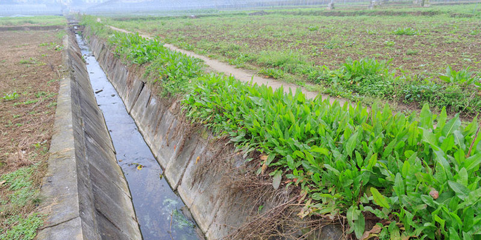

Tema 4: Contaminación del suelo.
Este mal invisible aparece cuando la concentración de contaminantes en la superficie es tan alta que daña la biodiversidad del suelo y pone en riesgo nuestra salud a través, sobre todo, de la alimentación. Precisamente actividades como la ganadería y la agricultura intensivas suelen emplear fármacos, plaguicidas y fertilizantes que contaminan los campos, al igual que ocurre con los metales pesados y otras sustancias químicas de origen natural o antropogénico.
Causas de la contaminación del suelo:
Contaminación puntual: se debe a razones concretas, tiene lugar en áreas reducidas y sus causas son fáciles de identificar. Esta contaminación terrestre es habitual en las ciudades, los emplazamientos de antiguas fábricas, los alrededores de las carreteras, los vertederos ilegales y las depuradoras.
Contaminación difusa: abarca territorios muy amplios y sus causas son diversas o difíciles de identificar. Este suceso implica la dispersión de contaminantes a través de sistemas aire-suelo-agua y tiene un impacto importante sobre la salud humana y el medio ambiente.

Consecuencias de la contaminación del suelo:
Daños a la salud.
Peores cultivos.
Cambio Climatico.
Contaminación del agua y aire.
Desplazamiento de población.
Desaparició de especies.
Desertificación.
Impacto en la conomia
¿Cómo podemos contribuir para la disminución de la contaminación del suelo?
Consumir alimentos sostenibles, reciclar correctamente pilas y baterías, hacer compostaje casero o deshacernos de los fármacos en los lugares habilitados para ello.
Incentivar un modelo más ecológico de industria, agricultura y ganadería, entre otras actividades económicas.
Mejorar la planificación urbanística de las ciudades y del transporte, así como el tratamiento de las aguas residuales.
Reformar la gestión de los residuos mineros, restaurar la topografía y conservar la capa superficial del suelo.
Incluir a las comunidades locales y a los pueblos indígenas en el diseño, la implementación y la evaluación de la gestión sostenible del suelo.